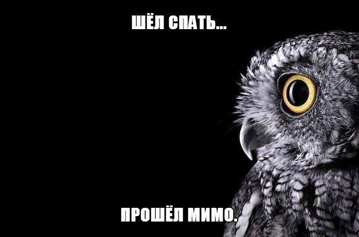

Про необходимость выдохновения

Все мы знаем, что такое вдохновение. Это очень полезное состояние и наверное, самые лучшие изобретения и произведения искусства были созданы под влиянием этого состояния. Но что делать, если это замечательное состояние захватывает нас целиком и полностью и не может отпустить на протяжении дней, недель, месяцев? Когда желание творить и созидать сталкивается с банальной нехваткой сил и времени? Когда твоё сознание хочет что-то сделать, а весь остальной организм находится в состоянии "с меня хватит"? И ведь самое обидное, что самые интересные идеи приходят именно тогда, когда необходимо ложиться спать. Засыпает город, просыпается мозг. Ты лежишь в темноте под одеялом, тебе тепло, хорошо, но в голове у тебя ворочаются шестерёнки мыслей, сталкиваются друг с другом, рождают новые идеи. И с одной стороны тебе жаль их забыть, а с другой ты понимаешь, что если ты встанешь, чтобы их записать, то не уснёшь ещё несколько часов, а то и не уснёшь вообще в эту ночь. Периодически мне нужно выдохновение, выключатель, палка в колёса шестерёнок моего разума, но панацеи к сожалению, не существует. Хотя есть несколько успешных и не очень методов борьбы с собой, которыми я могу поделиться.
Метод первый - медикаментозный
Вариант первый - пустырник. Честно говоря, не могу понять, насколько сильное он влияние на меня оказывает. Точнее, какая часть этого влияния имеет реальный медикаментозный эффект, а какая - плацебо. Но будем считать, что это бонус к прочим методам и вполне разумным решениeм будет комбинировать его с другими средствами.
Вариант второй - мелаксен. Если быть точным, то мелатонин. Более подробно о нём можно узнать в википедии, но если кратко, то это гормон сна. Каких-то побочных эффектов не имеет, но по себе заметил, что если мозг всё-таки победил мелатонин, поступивший в огранизм извне и уснуть не удалось, либо удалось, но на недостаточный период, то утром состояние у меня будет такое, что единственным желанием будет лечь и умереть где-нибудь тихонько в уголочке. Работать в таком состоянии крайне тяжело.
Вариант второй - физический
Банально - нужно себя вымотать какой-либо физической нагрузкой. Проблема одна - где айтишнику в рабочий день найти достаточное количество физической нагрузки? Периодические походы на турники, на это похоже не влияют. Когда ходил в спортзал - засыпал так же, как когда в него не ходил, впрочем, это было достаточно давно. Если за день я прошёл 10-15 километров, то этого тоже недостаточно, для того, чтобы хорошо уснуть.
Хотя например, другие физические воздействия - такие, как покачивание поезда или яхты - похоже, действительно помогают уснуть.
Вариант третий - психологический
Идея проста - нужно занять свой мозг обработкой чего-то совершенно неинтеллектуального, дабы вытеснить творческий процесс. Никогда не понимал людей, которые засыпают под музыку или речь, пока сам не втянулся в это. Собственно, условно можно поделить данный вид воздействия на три части:
- музыка (желательно на языке, который вы не понимаете)
- речь
- шум (белый шум, звуки дождя, ветра, воды, костра и т.п.)
- asmr - как смесь второго и третьего
Все эти воздействия должны быть достаточно тихими, нераздражающими. В качестве музыки вполне подойдёт какой-нибудь ambient, хотя я прекрасно засыпал несколько раз под Tanzwut, Megaherz, Rammstein и тому подобное. Возможно потому, что я часто слушал такое в детстве и юношестве и эти звуки переносят меня в атмосферу тех лет. Как ни странно, ностальгия и воспоминания помогают мне уснуть.
Из речи могу посоветовать подкаст от umputun'а. Я вовсе не хочу сказать, что он скучен настолько, что от него засыпаешь, с удовольствием слушаю его и днём, но сам тембр и размеренность речи неплохо успокаивают и убаюкивают.
В отношении звуков я долгое время искал место, где можно было бы скачать достаточно длинные аудиозаписи шума дождя, ветра и тому подобного, но нашёл это там, где ожидал меньше всего - в поиске по подкастам в айтюнсе. Искать можно по запросу "Sleep with Silk: Nature sounds". На всякий случай вот прямая ссылка. Подкасты достаточно длинные - около получаса каждый выпуск, вступление аккуратное, не мешает процессу засыпания.
ASMR - термин, о котором я узнал недавно. Расшифровывается как "автономная сенсорная меридиональная реакция". Интересующихся снова отправлю в википедию. Знаете ощущение, которое возникает, когда прослушиваешь любимую музыку в хорошем качестве и по спине пробегают мурашки, а волосы на руках становятся дыбом? Термин ASMR описывает как раз это самое состояние. Как это относится к теме засыпания, если это скорее обратная реакция? Очень просто. На ютубе например, можно найти множество записей по этому запросу, где девушки рассказывают что-то тихим шёпотом, воспроизводят какие-то тихие звуки, например, шуршание страниц книги или ещё что-нибудь в этом роде. Иногда это выполнено в форме ролевой игры (гусары, молчать!), в которой обыгрывается какая-то тема, например, поход в библиотеку. У некоторых людей действительно от этого появляются "мурашки", остальные же под такой звуковой фон прекрасно засыпают. Мне почему-то нравится вот это видео, возможно из-за звука кнопок геймпада:
Техническая составляющая
Для того, чтобы прослушивать что-либо на ночь, необходимо очевидно, походящее воспроизводящее устройство. По ряду причин я решил, что смартфон для этого подходит плохо. Во-первых, чаще всего смартфон ночью живёт на зарядке, а это может находиться далеко от подушки, либо может ограничить возможность перевернуться на другой бок, если вы пользуетесь наушниками. И во-вторых, если есть желание остановить воспроизведение, то скорее всего необходимо будет включить экран, а светящийся в темноте экран лишит вас сна окончательно. Путём долгих эволюционных миграций с одного устройства на другое, я пришёл к выводу, что это должен быть плеер и он должен удовлетворять следующим условиям:
- конечно же, таймер сна
- наличие внешнего динамика на случай, если вы не хотите путаться в наушниках
- низкая минимальная громкость как в наушниках, так и через динамик - мы же будем слушать его в полной тишине
- низкая минимальная яркость дисплея - по аналогичным очевидным причинам
- никаких сенсорных кнопок - вы просто не сможете эффективно управлять устройством наощупь
- отдельные кнопки для регулировки громкости - чем меньше манипуляций, тем больше шансов уснуть
- кнопки должны быть тихими, чтобы "КЛАЦ-КЛАЦ-КЛАЦ" в ночной тишине не будило вас и окружающих
- небольшие габариты и отсутствие острых углов - рано или поздно вы заснёте на устройстве и пробуждение будет неприятным
- хорошая автономность как средство борьбы с забывчивостью
- microUSB - вы не поверите, но некоторые всё ещё используют miniUSB!
- сохранение позиции - если захочется дослушать подкаст днём
- наличие закладок - очень удобно, так как перематывать час подкаста к интересующему моменту - это долго и неудобно
После смены десятка разнообразных китайских плееров, я нашёл вариант, который удовлетворяет почти в полной мере всем параметрам из этого списка. Самое интересное, что обнаружил я его только у одного продавца в то время, как множество плееров той же фирмы есть в наличии у множества продавцов. На сайте самой Ruizu я этого плеера тоже не нашёл, хотя прошивка похоже из той же серии, что и на остальных плеерах данной фирмы. Скорее всего какой-то лютый ребрендинг, но за свои деньги сделано очень неплохо. Для подкастов и книг - просто отличный вариант. А так же для тех, что изучает иностранные языки. Можно выделить кусок аудиозаписи и проигрывать его по кругу. Есть блокиратор кнопок, что тоже замечательно - как упоминал выше, рано или поздно плеер окажется под вами. Плюс есть диктофон, но не смотря на две решётки микрофонов и явный намёк на стереозапись, качество записи у того же Xiaomi Redmi Note 4X не в пример лучше (тестировал, когда записывал подкасты). Различных плееров от Ruizu у меня было в общей сложности три штуки плюс этот четвёртый. Но во всех были некие недостатки, мириться с которыми я не смог: либо нет динамика, либо блютуз номинальный и звук через него настолько ужасен, что даже подкасты слушать через него крайне неприятно, а нажатие на кнопку в полной тишине было подобно выстрелу ружья, либо нет кнопок громкости и для того, чтобы сделать потише приходится удерживать кнопку vol, а затем нажимать вверх и вниз, при этом включается экран, что тоже для наших целей плохо. Одним словом, процесс смены плееров остановился на Ruizu K11. В качестве наушников использую VE Monk - они оказались самыми неубиваемыми. Живут у меня уже два года, не смотря на то, что периодически при переворачивании с боку на бок за что-нибудь цепляются и подвергаются серьёзным физическим нагрузкам. Обычно наушники у меня дольше полугода не живут, а эти ещё и выдержали купание в солёной морской воде Эгейского моря, но это отдельная весёлая история. К тому же они не сильно мешают, если в них лежать на подушке, да и очень неплохо звучат за свои деньги.
Источник информации
Ну и нужно заставить себя дочитать книгу Андрея Курпатова "10 рецептов хорошего сна" - очень неплохой источник, где простым языком для людей далёких от медицины, объяснены механизмы торможения и возбуждения, которые протекают у нас в мозгу постоянно. Ну и каким-то волшебным образом заставить себя следовать рекомендациям. Например, не писать о том, как же научиться хорошо засыпать в три часа ночи.
Всем добрых снов и ночного выдохновения.